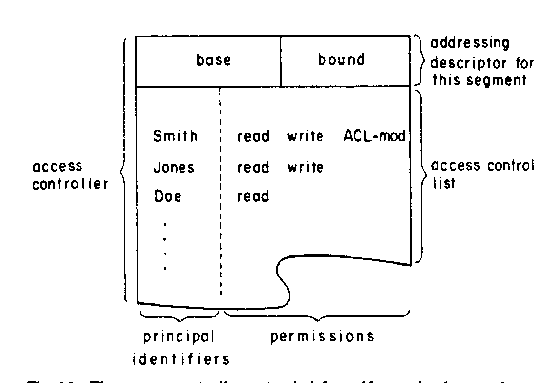

Fig. 12. The access controller extended for self contained control
over modification of its access control list. In this example, user Smith
has three permissions: to read and to write into the associated segment,
and to make modifications to the access control list of this access controller.
Jones cannot modify the access control list, even though he can read and
write in the segment described by this access controller. Doe is even more
constrained.